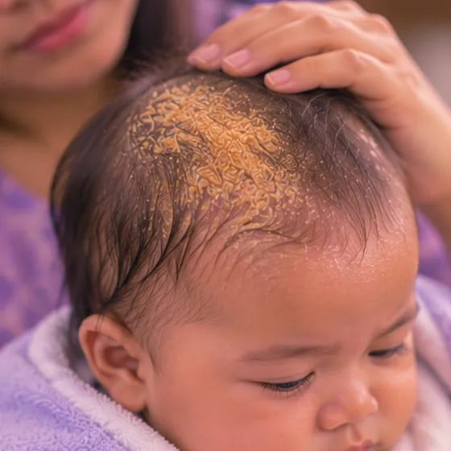

Seborrhoeic dermatitis (dandruff, oily scalp)
A common, long-term skin problem that causes flaky, itchy, greasy skin, especially on the scalp
What it is
The skin in oily areas, mostly the scalp, becomes red, itchy and flaky, with white or yellow flakes (dandruff); it often comes and goes and does not spread to other people.
- Scalp, face, upper chest
- Common; comes and goes
- Itchy, flaky, greasy skin
- Which doctor
- Family doctor or skin doctor (dermatologist)
- Common in
- Many teens and adults; babies can get a mild form (cradle cap)
- Contagious
- No
- Course
- Often long-lasting and comes and goes; regular care can keep it calmer
Common signs

Dry, flaky skinXerosis (dry skin) 
Flaky, scaly scalpScalp scaling 
Itchy skinPruritus 
Scaly scalp in babies (cradle cap)Infantile seborrhoeic dermatitis
More signs
- Flare-ups that come and go, often worse in cold, dry weather or when stressed
Why it happens

The cause is not fully knownIdiopathic 
StressPsychological stress
Other causes
- A yeast that lives on normal skin may irritate the skin in some people
- Oily skin and active oil glands, more so in teens and adults
- Some long-term illnesses (such as Parkinson's disease) or some medicines can make it more likely
See a doctor first if
- Red, hot, swollen or painful skin with pus, or a fever: see a doctor today
- A rash spreading over much of the body, or skin that is very red and peeling: see a doctor promptly
- Red, painful or swollen eyelids, eye pain or changes in vision: see a doctor promptly
- A baby with a rash that spreads, oozes or comes with a fever: see a doctor promptly
- Flakes and itching that do not improve after weeks of regular care, or keep returning: see a doctor
- A sore or scaly spot that bleeds, hurts or keeps getting bigger: other skin problems can look similar, so see a doctor
If any apply, please see a doctor before a session.
This page is general information. Please keep taking your normal medicine and keep seeing your doctor.
Keep taking your normal medicine and keep seeing your doctor. Our session is a gentle support and does not replace medical care.
Looking after yourself

Wash gently and pat dryGentle skin hygiene 
Do not squeeze or pick at itHands off 
Get good sleepGood sleep habits
More ways to look after yourself
- Wash the scalp and hair regularly with a gentle or anti-dandruff shampoo; ask your pharmacist which kind
- Avoid harsh soaps, strong hair products and very hot water on the scalp
Tell your therapist
- Broken, red or sore skin
- Pregnancy
- Pacemaker or metal implant
Your therapist will go through this with you before starting.
Related conditions
References: General information based on public health sources such as Mayo Clinic, NHS, Cleveland Clinic and NCBI StatPearls.
Page updated: 2026-10-31